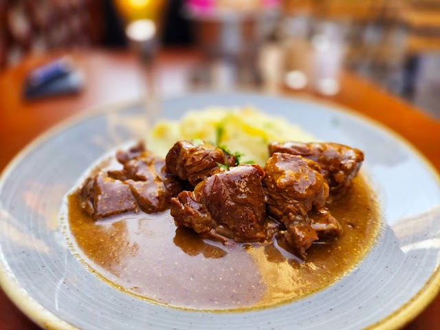
| 営業時間 | 毎日 12:00〜24:00 |
|---|---|
| 定休日 | なし(予約不可・現金のみ) |
| 住所 | Rue des Chartreux 9, 1000 Bruxelles |
| 予約 | 可(推奨) — 公式サイト |
| 公式 | 公式サイト |
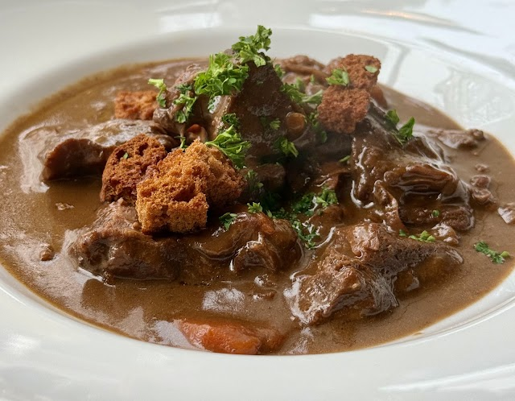
| 営業時間 | 月〜金 17:00〜22:30 / 土日 12:00〜22:30 |
|---|---|
| 定休日 | なし(予約不可) |
| 住所 | Rue du Lombard 25, 1000 Bruxelles |
| 予約 | 可(推奨) — 公式サイト |
| 公式 | 公式サイト |
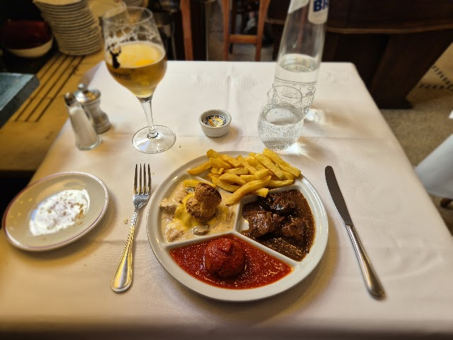
| 営業時間 | 月 6:00〜22:00 / 火〜日 12:00〜22:30 |
|---|---|
| 定休日 | なし |
| 住所 | Rue des Bouchers 13, 1000 Bruxelles |
| 予約 | 可(推奨) — ☎ 電話で予約 +32 2 511 55 50 ／ 公式サイト |
| 公式 | 公式サイト |
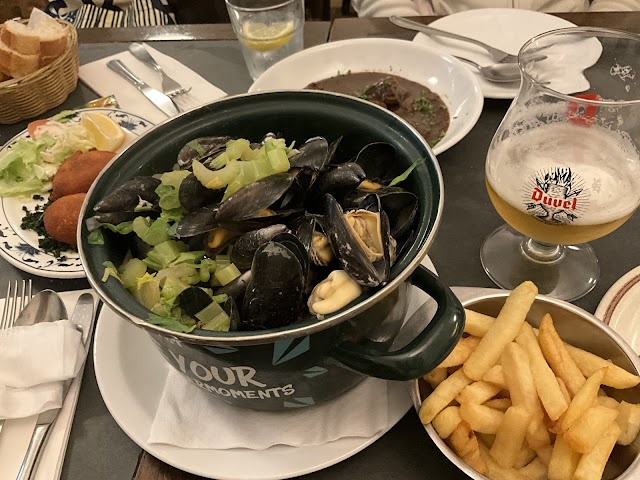
| 営業時間 | 12:00〜15:00 / 18:00〜22:30 |
|---|---|
| 定休日 | 要確認(日曜休との情報あり) |
| 住所 | Rue de Flandre 20, 1000 Bruxelles |
| 予約 | 可(推奨) — ☎ 電話で予約 +32 2 513 65 45 ／ 公式サイト |
| 公式 | 公式サイト |
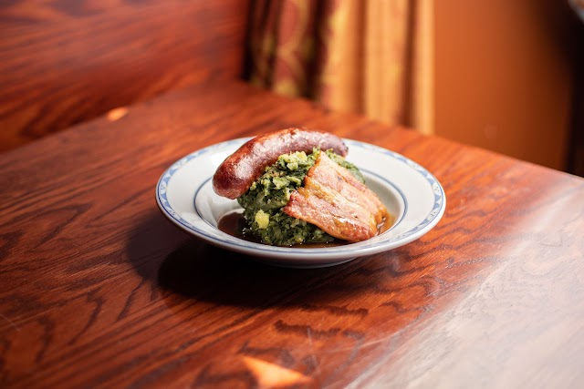
| 営業時間 | 火・木〜土 11:30〜23:00 / 水 17:00〜23:00 / 日 12:00〜16:00 |
|---|---|
| 定休日 | 月曜 |
| 住所 | Place du Jardin aux Fleurs 1, 1000 Bruxelles |
| 予約 | 可(推奨) — ☎ 電話で予約 +32 2 305 56 65 ／ 公式サイト |
| 公式 | 公式サイト |
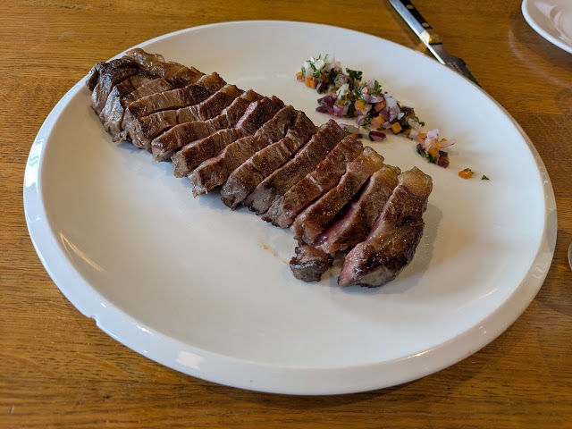
| 営業時間 | 月〜金 12:00〜14:00 / 7:00〜22:00 |
|---|---|
| 定休日 | 土・日曜 |
| 住所 | Place de la Chapelle 5, 1000 Bruxelles |
| 予約 | 可(推奨) — ☎ 電話で予約 +32 2 512 68 91 ／ 公式サイト |
| 公式 | 公式サイト |
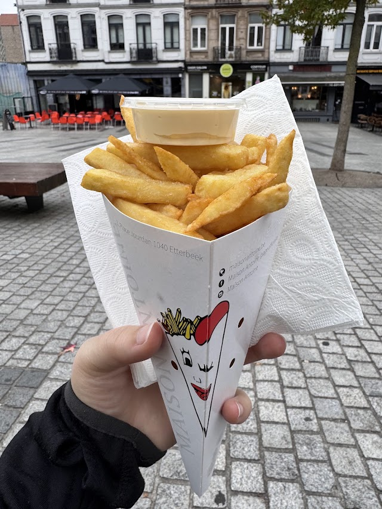
| 営業時間 | 毎日 11:30〜翌1:00 |
|---|---|
| 定休日 | なし |
| 住所 | Place Jourdan 1, 1040 Etterbeek |
| 予約 | 不要(店頭) — 公式サイト |
| 公式 | 公式サイト |
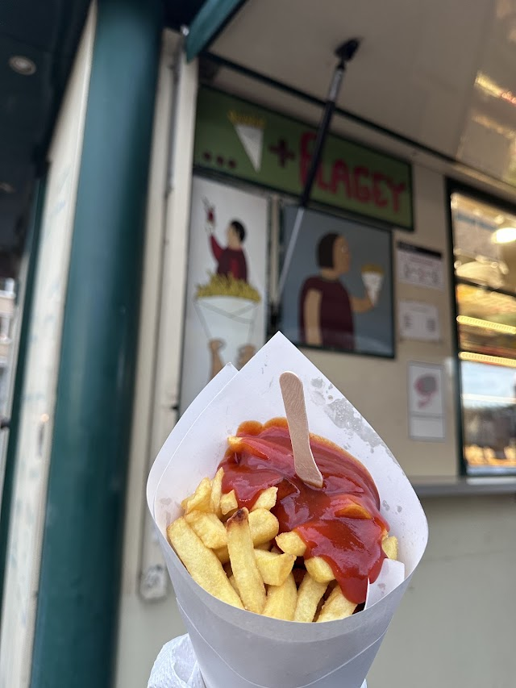
| 営業時間 | 月 18:00〜0:00 / 火〜木 11:30〜0:00 / 金・土 11:30〜2:00 / 日 11:30〜0:00 |
|---|---|
| 定休日 | なし |
| 住所 | Place Eugène Flagey, 1050 Ixelles |
| 予約 | 不要(店頭) |
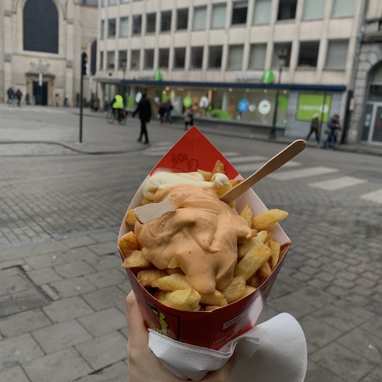
| 営業時間 | 月〜日 11:00〜1:00 |
|---|---|
| 定休日 | なし |
| 住所 | Rue Henri Maus 49, 1000 Bruxelles |
| 予約 | 不要(店頭) — 公式サイト |
| 公式 | 公式サイト |
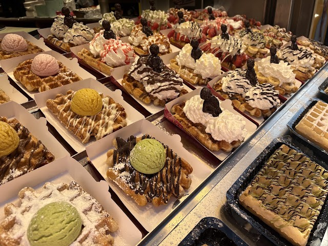
| 営業時間 | 毎日 9:00〜23:00 |
|---|---|
| 定休日 | なし |
| 住所 | Rue de l'Étuve 42, 1000 Bruxelles |
| 予約 | 不要(店頭) |
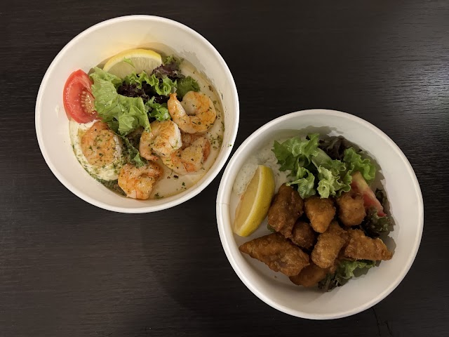
| 営業時間 | フィッシュバー: 火〜日 11:00〜18:30(魚屋: 火〜金 8:00〜18:00 / 土 8:00〜17:00) |
|---|---|
| 定休日 | 月曜 |
| 住所 | Rue Sainte-Catherine 45, 1000 Bruxelles |
| 予約 | 不要(店頭) — ☎ 電話で予約 +32 2 513 11 92 ／ 公式サイト |
| 公式 | 公式サイト |
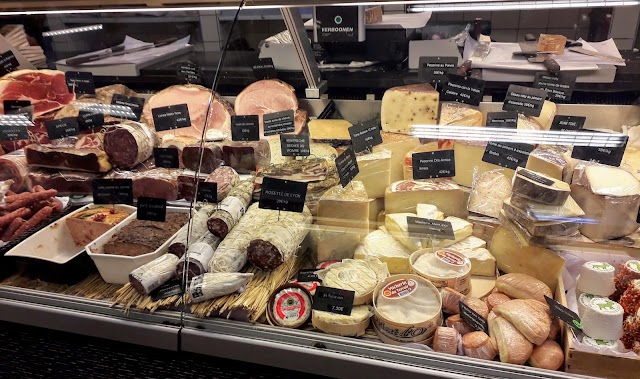
| 営業時間 | 月〜金 9:30〜18:15 / 土 9:00〜18:15 |
|---|---|
| 定休日 | 日曜 |
| 住所 | Rue du Vieux Marché aux Grains 4, 1000 Bruxelles |
| 予約 | 不要(店頭) — ☎ 電話で予約 +32 2 512 35 10 ／ 公式サイト |
| 公式 | 公式サイト |
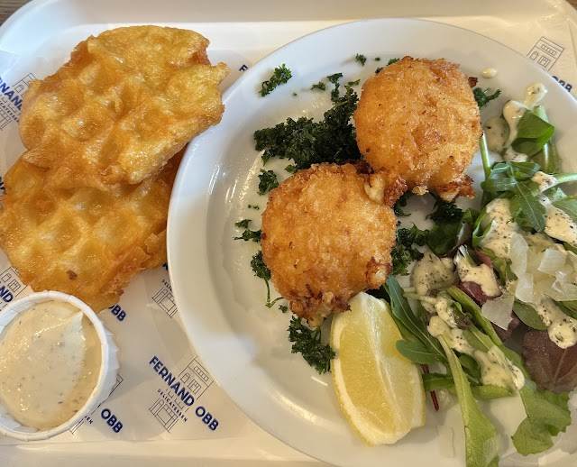
| 営業時間 | 月〜木 12:00〜14:30 / 17:30〜22:00、金〜日 12:00〜22:00 |
|---|---|
| 定休日 | なし |
| 住所 | Rue de Tamines 27, 1060 Saint-Gilles |
| 予約 | 不要(店頭) — ☎ 電話で予約 +32 2 771 91 08 ／ 公式サイト |
| 公式 | 公式サイト |
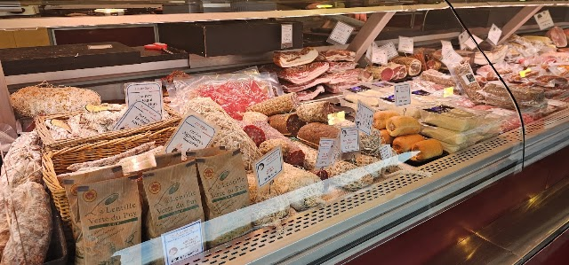
| 営業時間 | 土・日 7:00〜14:30頃 |
|---|---|
| 定休日 | 平日 |
| 住所 | Place Eugène Flagey, 1050 Ixelles |
| 予約 | 不要(店頭) — 公式サイト |
| 公式 | 公式サイト |
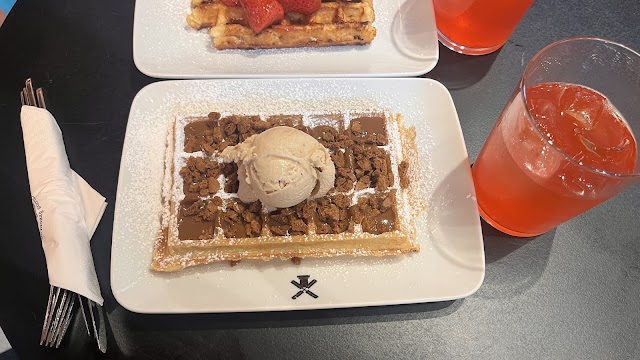
| 営業時間 | 月〜日 10:00〜19:00 |
|---|---|
| 定休日 | なし(本店は年中無休の情報) |
| 住所 | Rue au Beurre 31, 1000 Bruxelles |
| 予約 | 不要(店頭) — ☎ 電話で予約 +32 2 540 27 02 ／ 公式サイト |
| 公式 | 公式サイト |
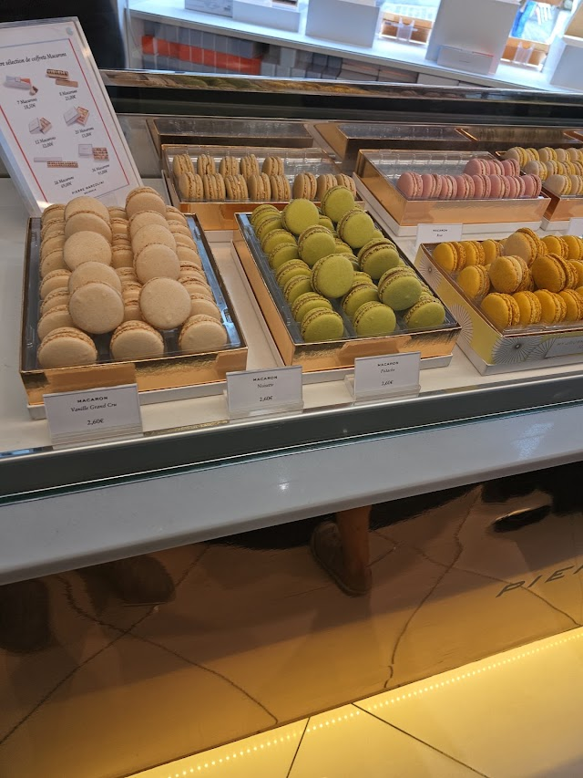
| 営業時間 | 月〜木 10:00〜19:30 / 金土 10:00〜20:00 / 日 10:00〜19:00 |
|---|---|
| 定休日 | なし |
| 住所 | Rue des Minimes 1, 1000 Bruxelles |
| 予約 | 不要(店頭) — ☎ 電話で予約 +32 2 514 12 06 ／ 公式サイト |
| 公式 | 公式サイト |
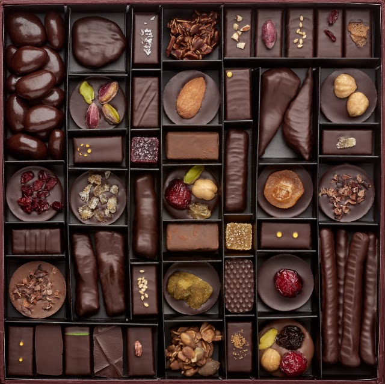
| 営業時間 | 毎日 10:30〜19:30 |
|---|---|
| 定休日 | なし |
| 住所 | Rue Ravenstein 2D, 1000 Bruxelles |
| 予約 | 不要(店頭) — ☎ 電話で予約 +32 2 511 16 02 ／ 公式サイト |
| 公式 | 公式サイト |
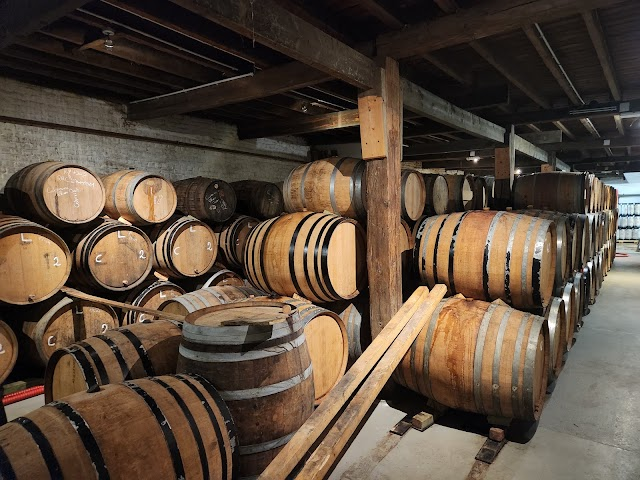
| 営業時間 | 月火木金土 10:00〜16:00(ショップは17:00まで) |
|---|---|
| 定休日 | 水曜・日曜・祝日 |
| 住所 | Rue Gheude 56, 1070 Anderlecht |
| 予約 | 可(推奨) — ☎ 電話で予約 +32 2 521 49 28 ／ 公式サイト |
| 公式 | 公式サイト |
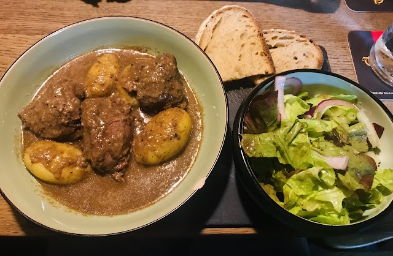
| 営業時間 | 月〜木・日 11:00〜翌1:00 / 金土 11:00〜翌2:00 |
|---|---|
| 定休日 | なし |
| 住所 | Place Fontainas 8, 1000 Bruxelles |
| 予約 | 可(推奨) — ☎ 電話で予約 +32 2 503 60 68 ／ 公式サイト |
| 公式 | 公式サイト |
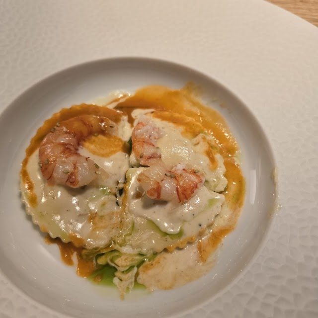
| 営業時間 | 火〜金 12:00-13:30 / 19:00-21:00 |
|---|---|
| 定休日 | 土・日・月 |
| 住所 | Place du Petit Sablon 1, 1000 Bruxelles |
| 予約 | 可(推奨) — ☎ 電話で予約 +32 2 223 16 17 ／ 公式サイト |
| 公式 | 公式サイト |
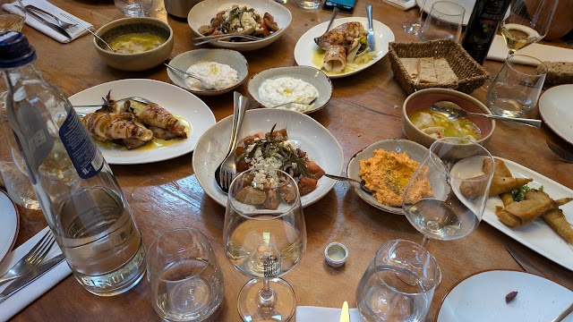
| 営業時間 | 月〜金 12:00-14:00 / 19:00-22:30、土 19:00-22:30(夏期休暇 7/18〜8/18、9/1まで昼休業) |
|---|---|
| 定休日 | 日曜 |
| 住所 | Rue du Marché aux Porcs 11-13, 1000 Bruxelles |
| 予約 | 可(推奨) — ☎ 電話で予約 +32 2 512 32 93 ／ 公式サイト |
| 公式 | 公式サイト |
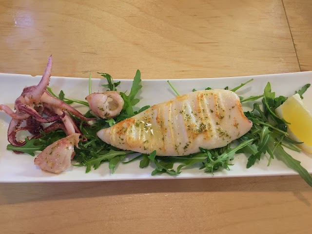
| 営業時間 | 水〜土 12:00〜15:00 / 6:30〜22:30 / 日 12:00〜17:00 |
|---|---|
| 定休日 | 月・火(日曜は夜のみ休み) |
| 住所 | Rue Haute 177, 1000 Bruxelles |
| 予約 | 可(推奨) — ☎ 電話で予約 +32 2 513 56 98 ／ 公式サイト |
| 公式 | 公式サイト |
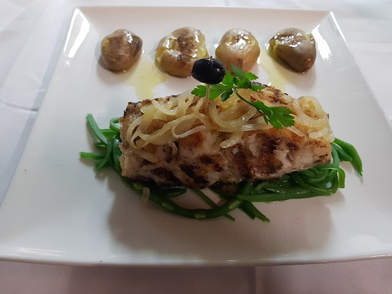
| 営業時間 | 11:30-22:00(火は14:00まで) |
|---|---|
| 定休日 | 水曜 |
| 住所 | Avenue Jean Volders 54, 1060 Saint-Gilles |
| 予約 | 可(推奨) — ☎ 電話で予約 +32 2 538 65 35 ／ 公式サイト |
| 公式 | 公式サイト |
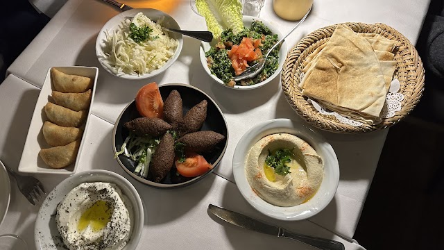
| 営業時間 | 月〜金 19:00-22:45、土 19:00-24:00 |
|---|---|
| 定休日 | 日曜 |
| 住所 | Rue des Éperonniers 67, 1000 Bruxelles |
| 予約 | 可(推奨) — ☎ 電話で予約 +32 2 513 08 34 ／ 公式サイト |
| 公式 | 公式サイト |
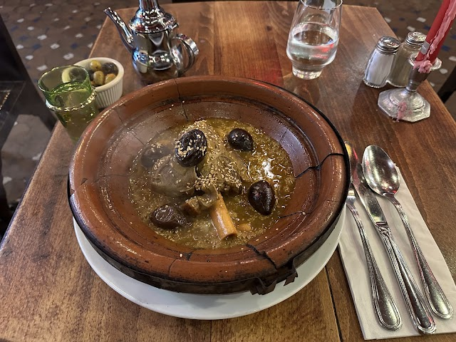
| 営業時間 | 毎日 12:00-14:00 / 18:30-23:30 |
|---|---|
| 定休日 | 無休(要確認) |
| 住所 | Rue Antoine Dansaert 20, 1000 Bruxelles |
| 予約 | 可(推奨) — ☎ 電話で予約 +32 2 502 40 26 ／ 公式サイト |
| 公式 | 公式サイト |
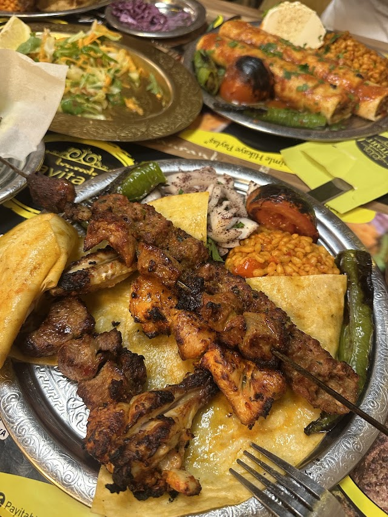
| 営業時間 | 毎日 8:00-23:00 |
|---|---|
| 定休日 | 無休(要確認) |
| 住所 | Chaussée de Haecht 121, 1030 Schaerbeek |
| 予約 | 可(推奨) — ☎ 電話で予約 +32 465 60 44 89 |
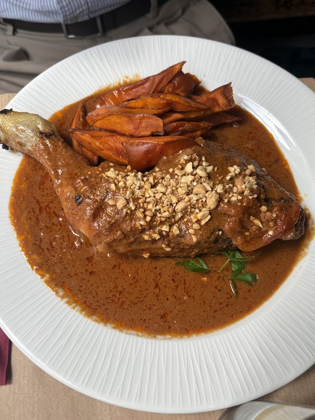
| 営業時間 | 月〜金 11:00-15:00 / 18:00-22:00、土 18:00-22:00 |
|---|---|
| 定休日 | 日曜 |
| 住所 | Rue du Trône 141, 1050 Ixelles |
| 予約 | 可(推奨) — ☎ 電話で予約 +32 2 512 18 64 ／ 公式サイト |
| 公式 | 公式サイト |
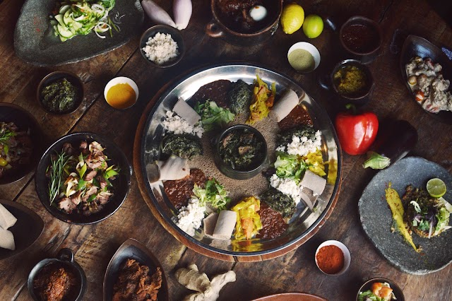
| 営業時間 | 月〜土 6:00〜23:00 / 日 12:00〜15:00 / 6:00〜23:00 |
|---|---|
| 定休日 | なし |
| 住所 | Rue de Laeken 34, 1000 Bruxelles |
| 予約 | 可(推奨) — ☎ 電話で予約 +32 474 08 39 72 ／ 公式サイト |
| 公式 | 公式サイト |
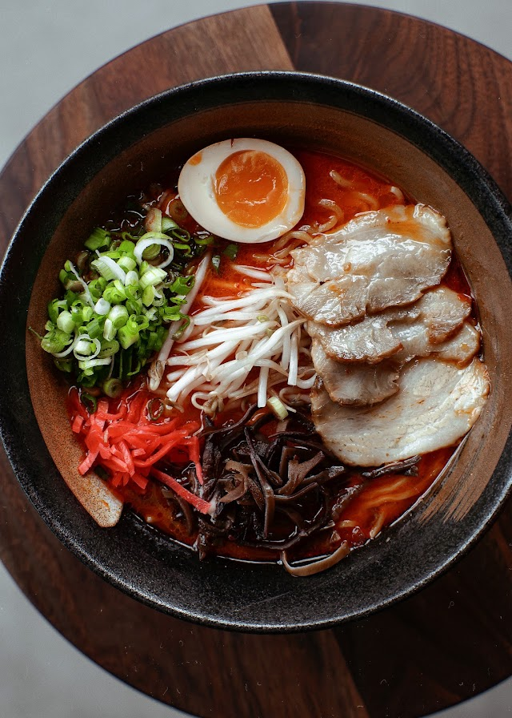
| 営業時間 | 12:00-14:30 / 18:00-22:00(木〜土は23:00まで) |
|---|---|
| 定休日 | 無休(要確認) |
| 住所 | Chaussée de Vleurgat 1, 1050 Ixelles |
| 予約 | 可(推奨) — ☎ 電話で予約 +32 2 640 40 57 ／ 公式サイト |
| 公式 | 公式サイト |
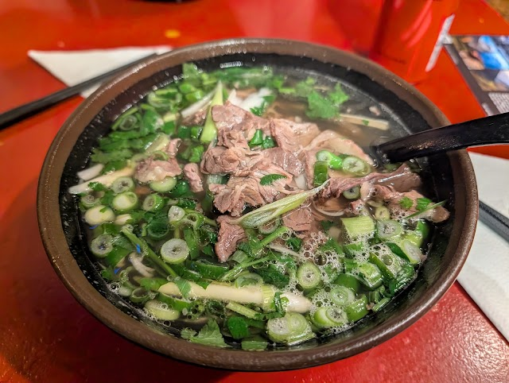
| 営業時間 | 11:30-14:30 / 18:00-21:30 |
|---|---|
| 定休日 | 月曜 |
| 住所 | Avenue des Celtes 6, 1040 Etterbeek |
| 予約 | 可(推奨) — ☎ 電話で予約 +32 2 733 51 11 ／ 公式サイト |
| 公式 | 公式サイト |
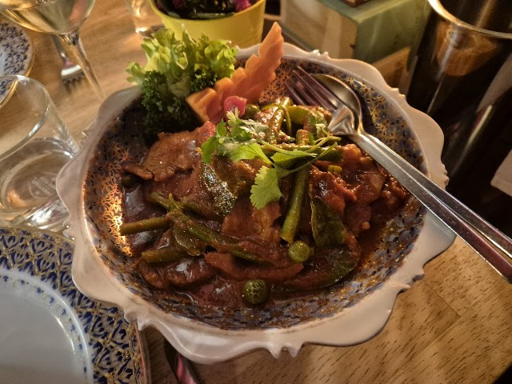
| 営業時間 | 火・水・土 18:30-22:30、木・金 12:00-14:00 / 18:30-22:30 |
|---|---|
| 定休日 | 日・月 |
| 住所 | Rue des Trois Ponts 22, 1160 Auderghem |
| 予約 | 可(推奨) — ☎ 電話で予約 +32 2 675 67 34 ／ 公式サイト |
| 公式 | 公式サイト |
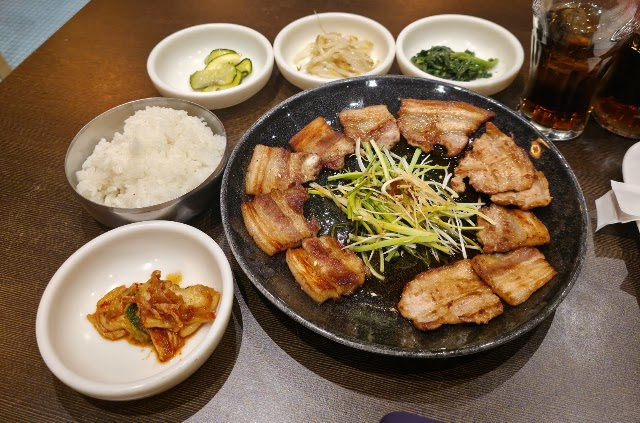
| 営業時間 | 月・火 19:00-22:30、水〜土 12:00-14:00 / 19:00-22:30 |
|---|---|
| 定休日 | 日曜 |
| 住所 | Chaussée de Charleroi 31/33, 1060 Saint-Gilles |
| 予約 | 可(推奨) — ☎ 電話で予約 +32 2 513 17 25 ／ 公式サイト |
| 公式 | 公式サイト |
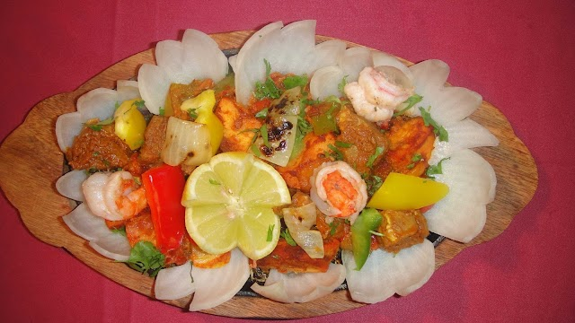
| 営業時間 | 月〜土 18:00-22:00 |
|---|---|
| 定休日 | 日曜 |
| 住所 | Chaussée de Vleurgat 153, 1050 Ixelles |
| 予約 | 可(推奨) — ☎ 電話で予約 +32 2 647 57 77 ／ 公式サイト |
| 公式 | 公式サイト |
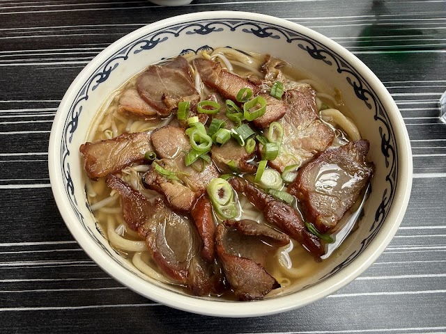
| 営業時間 | 火〜土 12:00〜14:30 / 6:00〜22:00 |
|---|---|
| 定休日 | 月・日曜 |
| 住所 | Rue Paul Devaux 9, 1000 Bruxelles |
| 予約 | 可(推奨) — ☎ 電話で予約 +32 2 513 16 88 ／ 公式サイト |
| 公式 | 公式サイト |
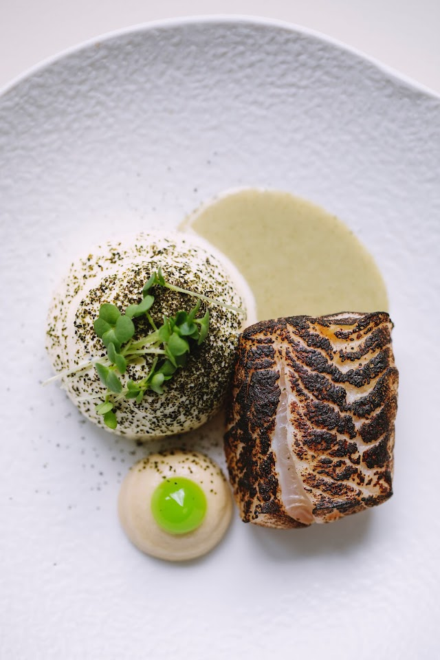
| 営業時間 | 火〜木 12:00-14:00 / 19:00-22:00、金 12:00-14:00 / 19:00-22:30、土 19:00-22:30 |
|---|---|
| 定休日 | 日・月 |
| 住所 | Avenue de Tervueren 292, 1150 Woluwe-Saint-Pierre |
| 予約 | 可(推奨) — ☎ 電話で予約 +32 2 773 00 80 ／ 公式サイト |
| 公式 | 公式サイト |
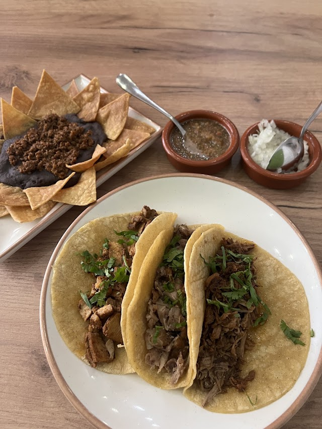
| 営業時間 | 火 18:00-22:00、水・木 12:00-15:00 / 18:00-22:00、金 〜23:00、土 12:00-22:00 |
|---|---|
| 定休日 | 日・月(要確認) |
| 住所 | Avenue Jean Volders 4A, 1060 Saint-Gilles |
| 予約 | 可(推奨) — ☎ 電話で予約 +32 497 43 81 05 |
※日曜はMarché de la Place Flagey(午前)が狙い目。月曜定休の店が多いので事前確認を。Maison Antoine(Place Jourdan)はEU地区観光と合わせて。
選考基準: ①個人・公式ブログ/現地メディアでの名店言及 ②複数レビューサイトでの口コミ・行列の突出 ③創業年・代替わりのある老舗 ④食の専門街・市場立地 ⑤受賞歴・ガイド掲載。写真は各店の料理・店内の実写(Google Maps投稿写真、© Google)。予約は各カードの「予約」欄のリンク(電話/予約サイト)から。営業時間・定休日は2026年7月時点の各種サイト情報で、変更があり得ます。